역기획서 · 리그 오브 레전드
소환사의 협곡 레벨디자인 역기획 (1편)
라인 3개와 정글, 오브젝트, 시야 배치가 공정성과 역할 분담, 국면 전환을 만드는 구조를 정리했습니다.

레벨디자인 역기획 · 포트폴리오
리그 오브 레전드 — 소환사의 협곡
레벨디자인 역기획서 (1편)
맵 구조와 플레이 다양성 · 2026 시즌(26.x 패치) 기준
장대규
jdk47888@naver.com · 010-8854-7342
분석 주제: 고정된 맵에서 매판 다른 경기 전개를 만드는 구조
01 / 27
표지입니다.
자세히 보기
배경은 공식 키 아트(바론 내셔)입니다.
목차
1부: 게임 · 맵 구성 / 2부: 문제에서 출발한 레벨디자인 분석
1부
개요
04 — 10
게임 · 맵 기본 구조와 용어
04
게임 개요
MOBA · 승리 조건 · 문제의식
05
맵 구성
기지 · 라인 · 강 · 정글 · 둥지
06
라인 구성
구조물 단계 · 라인별 특성
07 — 08
미니언 · 웨이브
종류 · 보상 · 생성 주기 · 행동
09
정글 구성
캠프 · 버프 · 바위게 · 에픽 몬스터
10
핵심 개념
정의와 플레이에서의 활용
2편 예고 — 전투 · 밸런스 · 개선안
포탑 골드 구조, 초반 격차, 역할 퀘스트, 역전 장치, 개선 제안
2부
레벨디자인
12 — 27
문제 → 기획 의도 → 구조 → 효과
12
문제 정의
고정된 맵에서 매판 다른 경기
A 13 — 16
공정성과 역할 분담
대칭 지형 · 라인 역할 · 오브젝트 · 구조물
B 17 — 19
정글
성장 수단 · 동선 분기 · 판단 흐름
C 20
가변 요소
드래곤 원소 · 협곡 변형
D 21
국면 전환
오브젝트 시각 · 14분 운영 전환
E 22 — 26
시야
안개 · 와드 · 부쉬 · 미니맵 · 페어라이트
27
결론
구조와 추구한 경험의 대응
목차
02 / 27
왼쪽은 1부, 오른쪽은 2부입니다.
자세히 보기
2부는 장마다 문제 → 기획 의도 → 구조 → 효과 순서입니다. 개선 제안은 2편에서 다룹니다.
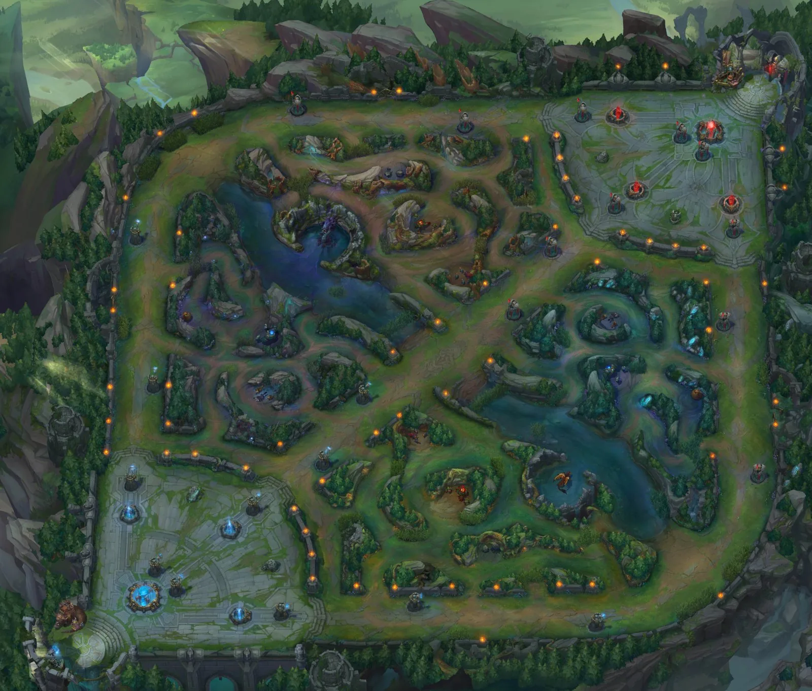
1부
개요
게임 규칙과 맵 구성
— 라인 · 미니언 · 정글 · 용어
1부 · 개요
03 / 27
1부 간지입니다.
게임 개요
5명씩 두 팀이 같은 맵에서 상대 넥서스 파괴를 목표로 경쟁하는 팀 대전 MOBA
| 항목 | 내용 |
|---|---|
| 장르 | 5:5 팀 대전 MOBA |
| 개발 · 출시 | Riot Games · 2009년 10월 |
| 승리 조건 | 상대 진영 넥서스 파괴 |
| 역할 (5) | 탑 · 정글 · 미드 · 원거리 딜러 · 서포터 |
| 성장 | 미니언 · 정글 몬스터 · 챔피언 처치 → 골드 · 경험치 |
| 맵 | 소환사의 협곡 — 라인 3개 · 정글 · 강 · 기지 2곳 |
| 분석 범위 | 2026 시즌(26.x 패치) 소환사의 협곡 |
MOBA란
Multiplayer Online Battle Arena — 팀을 이룬 플레이어가 각자 캐릭터 1명을 조작해 상대 기지 파괴를 목표로 경쟁하는 실시간 대전 장르
- RTS(실시간 전략)의 부대 운용을 캐릭터 1명 조작으로 축소
- 매판 레벨 1에서 시작해 경기 안에서 성장
- 워크래프트 III 사용자 지정 맵 'DotA'에서 장르 정립
문제의식
맵은 매판 같으나, 플레이어는 수천 판을 반복해도 매판 다른 경기를 경험합니다.
→ 2부에서 이 차이를 만드는 레벨디자인 구조를 분석합니다.
1부 · 개요
04 / 27
문제의식은 2부 12p(문제 정의)와 27p(결론)에서 다시 다룹니다.
맵 구성
블루(좌하) · 레드(우상) 진영 사이를 라인 3개 · 강 · 정글이 연결하는 정사각형 맵
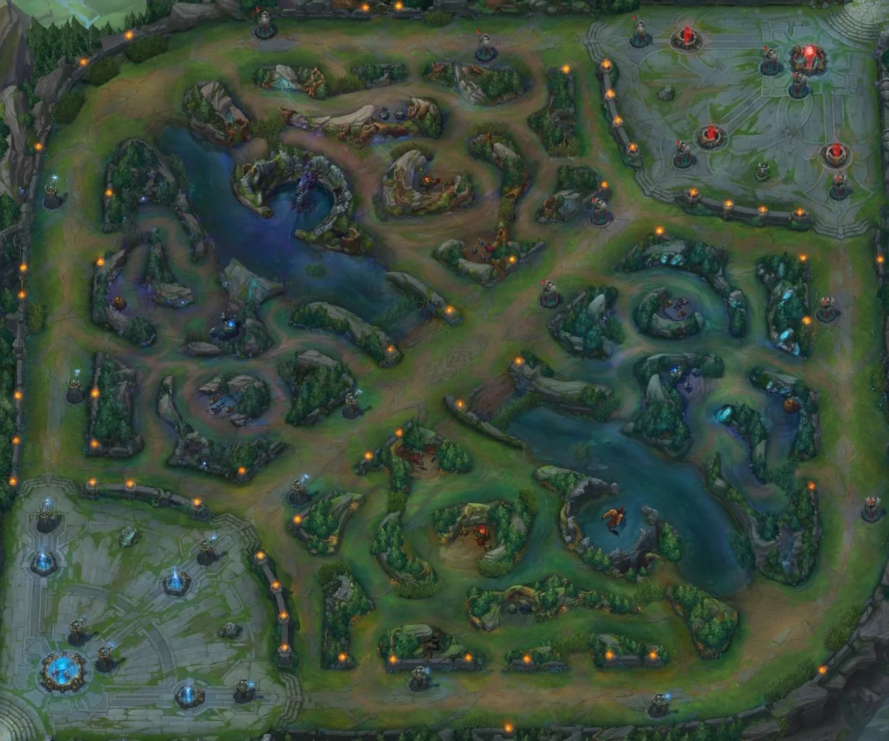
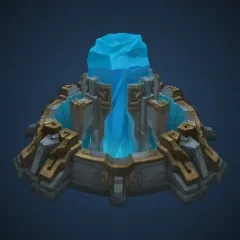
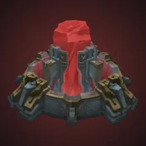

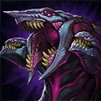
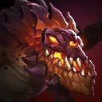
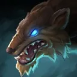
탑
미드
바텀
블루 진영 기지
넥서스 · 포탑 · 상점 · 부활 지점 (좌하단)
레드 진영 기지
블루 진영과 동일 구성 (우상단)
탑 라인
맵 좌측 · 상단 외곽을 따라 연결
미드 라인
두 기지를 잇는 대각선 최단 경로
바텀 라인
맵 하단 · 우측 외곽을 따라 연결
강
맵을 가로지르는 중립 지대 (탑 쪽 · 바텀 쪽)
탑 쪽 강 둥지
공허 유충 · 협곡의 전령 · 바론 내셔
바텀 쪽 강 둥지
드래곤 · 장로 드래곤
정글 (4구역)
라인 사이 중립 몬스터 구역 · 진영당 2구역
팀당 구조물
포탑 11기(라인 9 + 넥서스 2) · 억제기 3기 · 넥서스 1기
1부 · 개요
05 / 27
픽토그램은 기지=넥서스, 라인=미니언(테두리 색으로 탑·미드·바텀 구분), 강=바위게, 둥지=바론·드래곤, 정글=늑대입니다.
자세히 보기
공식 맵 렌더 기준이며, 위치는 구역 대표 지점입니다.
1부 · 개요
06 / 27
라인 구성 — 구조물 · 미니언 · 라인 특성
라인마다 구조물 4단계(포탑 3기 + 억제기)가 기지를 보호합니다. 라인별 인원과 인접 오브젝트가 다릅니다.
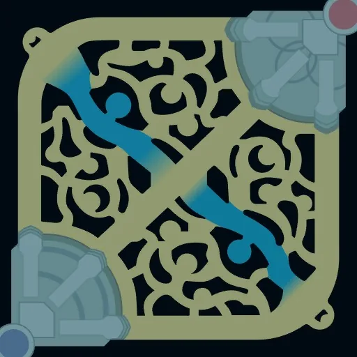
1
2
3
4
1
2
3
4
1
2
3
4
5
5
6
탑
미드
바텀
● 번호 = 블루 진영 구조물 단계 ■ 레드 진영 구조물
구조물 단계 — 앞 단계 파괴 후 다음 단계 공격 가능 · 넥서스 파괴 시 승리
1
외곽 포탑
›
2
내부 포탑
›
3
억제기 포탑
›
4
억제기
›
5
넥서스 포탑 ×2
›
6
넥서스
(승리조건)
| 라인 | 인원 | 특징 |
|---|---|---|
| 탑 | 1 | 가장 긴 1:1 라인 · 탑 쪽 강 오브젝트(유충 · 전령 · 바론) 인접 |
| 미드 | 1 | 가장 짧은 라인 · 맵 중앙 · 양쪽 강으로 이동 용이 |
| 바텀 | 2 (원딜러 + 서포터) | 2:2 라인 · 바텀 쪽 강 드래곤 둥지 인접 |
미니언 웨이브
0:30 첫 등장 · 30초 주기(14분 이후 25초, 30분 이후 20초). 근거리 · 원거리 · 대포 미니언으로 구성 · 라인을 따라 자동 진군 · 억제기 파괴 시 해당 라인에 슈퍼 미니언 추가
번호는 블루 진영 기준 구조물 단계입니다.
자세히 보기
레드 진영은 점대칭 위치에 같은 구성으로 놓입니다. 웨이브 주기는 26.1 기준입니다. 포탑 방패(플레이트) 골드는 2편에서 분석합니다.
미니언 — 종류와 처치 보상
양 진영 기지에서 자동 생성되어 라인을 진군하는 유닛 — 라인전의 기본 성장 자원
근거리
웨이브당 3
웨이브 앞열에서 상대 공격을 받습니다.
골드
20
경험치
62
사거리
110
원거리 미니언보다 체력이 높습니다.
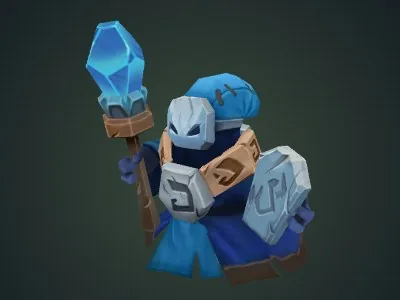
원거리
웨이브당 3
뒷열에서 원거리 공격을 합니다.
골드
14
경험치
31
사거리
550
체력이 낮아 먼저 처치됩니다.
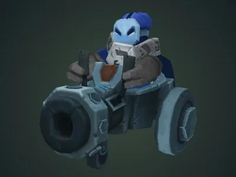
대포
2~3웨이브마다 1
포탑 공략 담당
골드
50+
경험치
75
사거리
300
포탑에 주는 피해 84% (일반 미니언 60%)

슈퍼
억제기 파괴 시
대포 미니언 대신 등장
골드
50+
경험치
75
사거리
근접
주변 미니언 방어력 · 마법 저항력 +35
골드 — 막타
막타는 마지막 공격으로 처치하는 행동입니다. 막타를 친 챔피언만 골드를 얻습니다. 막타 성공률이 골드 수입을 결정합니다.
경험치 — 주변 공유
처치 지점 1500 범위 안의 아군 챔피언이 나눠 받습니다. 막타 없이 라인에 머물러도 경험치를 얻습니다.
웨이브 1개의 가치
일반 102골드 (근거리 3 + 원거리 3)
대포 포함 152골드 이상
1부 · 개요
07 / 27
수치는 26.x 소환사의 협곡 기준입니다(리그 오브 레전드 위키).
자세히 보기
대포·슈퍼 미니언 골드는 50에서 시작해 강화(90초)마다 1씩 늘어납니다(26.1 조정). 미니언이 챔피언·구조물에 주는 피해는 60%로 줄여 적용합니다. 경험치는 공유 인원이 늘수록 1인당 몫이 줄어듭니다.
웨이브 — 생성 주기와 행동
웨이브는 상대 웨이브와 싸운 뒤 남은 병력으로 포탑을 공격합니다. 웨이브의 위치가 라인전의 위치를 결정합니다.
블루 기지
레드 기지
교전 지점 = 라인전 위치
포탑
포탑
포탑
포탑
1
진군
0:30부터 세 라인에 동시 생성 · 라인을 따라 이동
2
교전
상대 웨이브와 만난 지점에서 전투 · 상대 챔피언을 때리면 주변 미니언이 반격
3
공성
남은 미니언이 포탑 공격 · 포탑은 미니언부터 공격
4
누적
처치되지 않은 미니언은 다음 웨이브와 합쳐집니다.
생성 주기 · 강화
| 시점 | 생성 주기 | 대포 미니언 |
|---|---|---|
| 0:30 — | 30초 | 3웨이브마다 1기 |
| 14:00 — | 25초 | 2웨이브마다 1기 |
| 25:00 — | 25초 | 매 웨이브 |
| 30:00 — | 20초 | 매 웨이브 |
90초마다 체력 · 공격력 상승 · 억제기 파괴 라인에 슈퍼 미니언
웨이브 관리 — 웨이브 위치를 조절하는 기술
| 웨이브 관리 | 통용 용어 | 방법 | 얻는 것 |
|---|---|---|---|
| 밀기 | 푸시 | 웨이브를 상대 포탑까지 밀어 넣습니다. | 귀환 · 로밍 · 오브젝트 합류 시간 확보 |
| 당기기 | 프리징 | 웨이브를 아군 포탑 앞에 묶어 둡니다. | 상대의 파밍 위험 증가 · 갱킹에 안전 |
| 쌓기 | 슬로 푸시 | 웨이브를 천천히 키워 한 번에 밀어 넣습니다. | 포탑 압박 · 다이브 준비 |
웨이브를 밀어 둔 라이너만 자리를 비울 수 있습니다. 웨이브 위치가 로밍 · 오브젝트 합류 여부를 결정합니다.
1부 · 개요
08 / 27
26.x 위키 기준입니다.
자세히 보기
첫 대포 미니언은 1:30에 나옵니다. 탑·바텀은 14분 전까지 웨이브 이동 속도를 보정합니다(라인 길이 차이 보정). 미니언 공격 우선순위 1순위는 '아군 챔피언을 공격한 적 챔피언'입니다. 웨이브 관리 용어는 커뮤니티 통용 표현입니다.
1부 · 개요
09 / 27
정글 구성 — 캠프 · 버프 · 에픽 몬스터
진영마다 버프 캠프 2종과 일반 캠프 4종, 강에 바위게 2마리와 에픽 몬스터 둥지 2곳을 배치합니다.
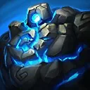
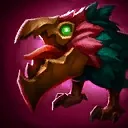
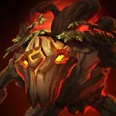
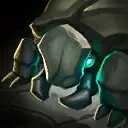
탑 쪽 정글 — 블루 버프 구역
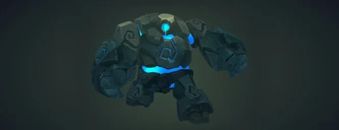
1
푸른 파수꾼
블루 버프 — 스킬 가속 · 마나 재생
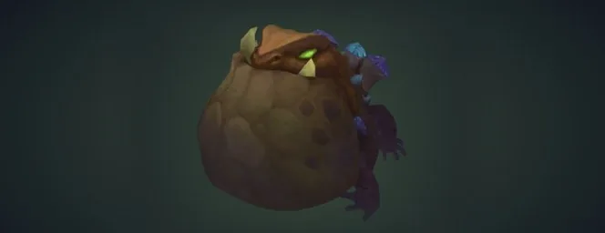
2
두꺼비
골드 · 경험치
3
어스름 늑대
골드 · 경험치
바텀 쪽 정글 — 레드 버프 구역
4
칼날부리
골드 · 경험치
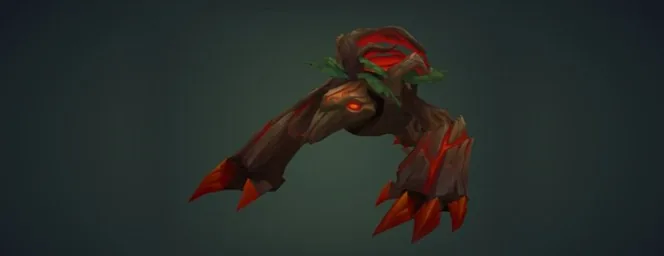
5
붉은 덩굴정령
레드 버프 — 공격 시 둔화 · 지속 피해, 체력 재생
6
돌거북
골드 · 경험치
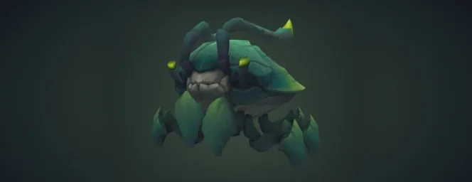
7
협곡 바위게 ×2 · 강
처치 지점 시야 · 이동 속도 증가 구역
8
탑 쪽 둥지 유충 · 전령 · 바론
9
바텀 쪽 둥지 드래곤 · 장로
버프 캠프 2종이 진영 정글을 탑 쪽(블루 버프) · 바텀 쪽(레드 버프)으로 구분합니다. 시작 캠프 선택이 정글러의 첫 동선을 결정합니다.
1
2
3
4
5
6
7
7
8
9
이미지는 각 몬스터의 인게임 3D 모델 렌더입니다(리그 오브 레전드 위키).
자세히 보기
번호는 블루 진영 기준입니다(파란 테두리). 붉은 테두리는 레드 진영 캠프로, 점대칭 위치에 같은 구성으로 놓입니다(레드 진영은 블루 버프가 바텀 쪽). 등장 시각은 버프·늑대·칼날부리 0:55, 두꺼비·돌거북 1:07, 바위게 2:55입니다.
핵심 개념 — 정의와 활용
2부 분석에 쓰는 개념 5가지 — 정의와 플레이에서의 활용 방식
| 개념 | 정의 | 플레이에서의 활용 |
|---|---|---|
| 전장의 안개 | 아군 유닛 · 구조물 · 와드 시야 밖은 가려집니다. 벽은 시야를 차단하고, 부쉬 내부는 외부에서 보이지 않습니다. | 와드로 안개를 걷어 상대 위치 확인 · 안개 속 경로로 기습 |
| 라이너 | 정해진 라인에서 미니언 처치로 성장합니다. 시야가 라인 주변에 한정됩니다. | 막타로 골드 확보 → 웨이브를 밀어 둔 뒤 귀환 · 로밍 |
| 정글러 | 정글 몬스터로 성장합니다. 안개 속을 이동하며 라인에 개입합니다. | 캠프 순환 중 갱킹 시점 선택 · 오브젝트 처치 주도 |
| 로밍 | 라이너가 자기 라인을 비우고 다른 라인 · 강에 개입하는 행동입니다. | 웨이브를 밀어 둔 직후 이동 → 다른 라인에서 수적 우위 |
| 교전 | 소규모 교전(2:2 · 3:3)과 한타(5:5)로 구분합니다. | 시야 · 수적 우위가 있는 지점에서 개시, 불리하면 회피 |
다섯 개념 모두 정보(안개)와 위치 선택(라인 · 정글 · 로밍)에 연결 — 2부 레벨디자인 분석의 기준
1부 · 개요
10 / 27
E장(시야)과 B장(정글)의 전제입니다.
2부
레벨디자인
문제 정의 → 공정성과 역할 → 정글 → 가변 요소 → 국면 전환 → 시야
2부 · 레벨디자인
11 / 27
2부 간지입니다.
문제 정의 — 고정된 맵의 반복
1부의 문제의식: 고정된 맵에서 매판 다른 경기가 나오는 원인 — 레벨디자인 구조에서 분석합니다.
문제 — 서로 충돌하는 두 요구
1
같은 맵을 수천 판 반복 → 최적 동선 · 전개가 암기되어 경기가 정형화됩니다.
2
경쟁 게임이므로 맵을 매판 바꾸면 진영 유불리가 생겨 공정성이 훼손됩니다.
3
공정성 유지 · 매판 다른 전개 — 두 요구를 동시에 충족해야 합니다.
기획 의도
지형은 고정해 공정성을 지키고, 지형 위의 목표 · 경로 · 시간 · 정보를 변수로 만들어 매판 다른 경기를 유도합니다.
해결 구조 — 2부 구성
A
공정성과 역할
대칭 지형 + 라인 · 사이드마다 다른 목표
13 — 16p
B
정글
라인 없는 역할의 성장 수단 + 동선 분기
17 — 19p
C
가변 요소
드래곤 원소에 따라 협곡 지형 변형
20p
D
국면 전환
오브젝트 등장 시각으로 핵심 지점 이동
21p
E
시야
안개로 정보를 가려 수싸움 · 기습 유도
22 — 26p
문제 정의
|
A 공정성과 역할
|
B 정글
|
C 가변 요소
|
D 국면 전환
|
E 시야
2부 · 문제 정의
12 / 27
2부 전체의 출발점입니다.
자세히 보기
장마다 문제 → 기획 의도 → 구조 → 효과 순서로 정리합니다. 기획 의도의 '이유'는 공개 자료가 없는 부분이 많아 추정으로 표기합니다.
A. 공정한 지형, 다른 목표
양 팀 조건은 같게, 라인과 사이드의 목표는 다르게 — 공정성과 다양성을 분리해서 설계합니다.
점대칭
탑 쪽: 유충 · 전령 · 바론
바텀 쪽: 드래곤 · 장로
문제
점대칭 맵은 공정합니다. 세 라인 · 양 팀의 목표까지 같으면 모든 판이 같은 전개를 반복하고 5명의 역할 구분이 흐려집니다.
→
기획 의도
지형은 대칭으로 고정하고, 대칭을 깨는 대상을 목표(라인 목적 · 오브젝트)로 한정합니다.
설계 근거 (추정)
- 비대칭 지형은 진영 유불리로 직결됩니다. 공략 목표만 비대칭으로 둔 것으로 판단합니다.
- 탑 · 바텀 강에 성격이 다른 오브젝트 배치 — 먼저 공략할 사이드가 매판 선택지가 됩니다.
A장 구성
14p
라인별 역할
탑 · 미드 · 바텀에 서로 다른 목적 부여
15p
오브젝트 유형
탑 쪽은 운용형, 드래곤 · 바론은 강화형
16p
구조물 순서
어떤 전개도 라인 진행을 거치도록 강제
문제 정의
|
A 공정성과 역할
|
B 정글
|
C 가변 요소
|
D 국면 전환
|
E 시야
2부 · A 공정성과 역할
13 / 27
미니맵은 구조 설명용 도식입니다.
자세히 보기
블루 진영은 좌하단, 레드 진영은 우상단입니다.
A. 라인별 역할 분담
라인의 길이 · 인원 · 인접 오브젝트를 달리해 탑은 운영, 미드는 개입, 바텀은 후반을 담당하게 합니다.
탑 — 운영
미드 — 개입
바텀 — 후반
문제
세 라인이 같은 구조면 라이너 3명의 플레이가 같아지고, 조합 · 전략 차이가 생기지 않습니다.
→
기획 의도
라인마다 길이 · 인원 · 인접 오브젝트 · 퀘스트 보상을 달리해 서로 다른 목적을 부여합니다.
탑
사이드 운영 및 스플릿푸시 강화 — 운영 목적
구조 — 1:1 장기 라인 · 공허 유충(포탑 추가 피해) · 협곡의 전령(포탑 돌진) · 역할 퀘스트 보상(레벨 20 · 텔레포트 강화)
미드
양 사이드 개입 · 교전 주도
구조 — 최단 라인 · 맵 중앙 · 양쪽 강 접근 경로 · 역할 퀘스트 보상(3단계 신발)
바텀
원딜러 성장 · 드래곤 버프 기반 후반 전력 강화
구조 — 2:2 라인(서포터가 원딜러 보호) · 드래곤 누적 버프 · 영혼 · 장로 드래곤 · 역할 퀘스트 보상(신발 전용 슬롯)
효과 — 5명이 서로 다른 목표를 추구합니다. 자원을 몰아줄 라인 선택이 매판 전략 요소입니다.
문제 정의
|
A 공정성과 역할
|
B 정글
|
C 가변 요소
|
D 국면 전환
|
E 시야
2부 · A 공정성과 역할
14 / 27
역할 퀘스트는 2026 시즌 기준입니다.
자세히 보기
상세 수치는 2편에서 분석합니다.
A. 오브젝트 유형 — 운용형과 강화형
같은 '오브젝트'라도 쓰는 방식을 다르게 설계했습니다. 탑 쪽은 운영 수단, 드래곤 · 바론은 전력 강화 수단입니다.
문제
오브젝트가 모두 '처치하면 강해지는' 같은 보상이면, 매판 같은 순서로 같은 오브젝트만 노리게 됩니다.
→
기획 의도
보상의 성격을 나눕니다 — 쓰는 시점을 고르는 운용형과 먼저 차지해야 하는 강화형
전략 운용형
탑 쪽 강 · 초중반
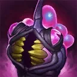
공허 유충 ×3
8:00
처치 수만큼 포탑 공격 시 추가 피해 · 공허 진드기 소환
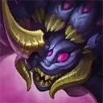
협곡의 전령
15:00
처치 팀이 원하는 시점 · 라인에 소환, 포탑으로 돌진
팀이 사용 시점 · 위치를 선택 — 사이드 운영 · 스플릿푸시 지원 (탑 의도)
전력 강화형
양쪽 강 · 중후반
드래곤 → 장로
5:00 ~
원소별 영구 누적 버프 · 4회 처치 시 영혼 · 장로는 처형 효과
바론 내셔
20:00 ~
팀 전원 공격력 · 주문력 증가 · 귀환 강화 · 주변 미니언 강화
처치 즉시 팀 전체 능력치 상승 — 후반 한타 전력 강화 (바텀 의도)
효과 — 운용형은 '언제 · 어디서 쓸지', 강화형은 '누가 먼저 차지할지'를 판단하게 합니다. 오브젝트마다 판단 기준이 다릅니다.
문제 정의
|
A 공정성과 역할
|
B 정글
|
C 가변 요소
|
D 국면 전환
|
E 시야
2부 · A 공정성과 역할
15 / 27
바론은 탑 쪽 강에 위치하나 효과가 팀 전체 능력치 강화이므로 강화형으로 분류합니다.
자세히 보기
유충·전령 효과는 26.x 기준으로 요약했습니다.
A. 승리 경로 — 구조물 순서와 기지 보호
넥서스는 앞 단계 구조물이 모두 파괴되기 전까지 무적입니다. 어떤 경기든 라인을 따라 단계적으로 진행됩니다.
문제
넥서스를 처음부터 공격할 수 있으면 라인전 · 교전 · 오브젝트 쟁탈이 모두 생략됩니다. 기습 한 번으로 승부가 결정됩니다.
→
기획 의도
구조물을 순서대로만 공격할 수 있게 하고, 미니언 없는 공격을 포탑 규칙으로 차단합니다.
1
외곽 포탑
처음부터 공격 가능
›
2
내부 포탑
외곽 포탑 파괴 후
›
3
억제기 포탑
내부 포탑 파괴 후
›
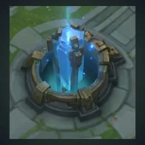
억제기
억제기 포탑 파괴 후
›
5
넥서스 포탑 ×2
억제기 1개 이상 파괴 후
›
넥서스
넥서스 포탑 2기 파괴 후
미니언 없는 공격 차단
주변에 아군 미니언이 없으면 포탑이 받는 피해 80% 감소
포탑의 챔피언 견제
사거리 750 · 아군 챔피언을 공격한 적 챔피언으로 대상 변경 · 연속 타격 시 피해 증가(최대 +150%)
재생성
넥서스 포탑 3분 후 체력 40%로 재생성 · 억제기 5분 후 재생성
효과 — 앞선 팀도 단계를 거쳐야 하므로 뒤처진 팀의 수비 · 역전 시간이 확보됩니다. 포탑 파괴마다 맵 장악 범위가 넓어지는 진행감이 형성됩니다.
문제 정의
|
A 공정성과 역할
|
B 정글
|
C 가변 요소
|
D 국면 전환
|
E 시야
2부 · A 공정성과 역할
16 / 27
26.x 기준입니다.
자세히 보기
포탑은 앞 단계 포탑이 파괴되어야 공격할 수 있습니다. 넥서스는 억제기 3개가 모두 서 있거나 넥서스 포탑이 하나라도 남아 있으면 무적입니다. 억제기는 5분 후 재생성됩니다. 미니언이 없을 때의 피해 감소 효과는 미니언·협곡의 전령이 주변에 있으면 해제됩니다.
B. 정글 — 라인 없는 역할의 성장 수단
정글러에게 라인과 대등한 수입을 제공하고, 수입을 얻는 동선이 개입 경로와 겹치도록 캠프를 배치합니다.
문제
정글러는 라인이 없어 미니언 수입이 없습니다. 수입이 부족하면 성장에서 뒤처지고, 동선이 하나뿐이면 위치가 노출됩니다.
→
기획 의도
캠프 골드 · 재생성 주기로 라인과 비슷한 수입을 보장하고, 캠프를 라인 사이에 두어 성장과 개입이 같은 길 위에 놓이게 합니다.
| 캠프 | 골드 | 재생성 |
|---|---|---|
| 푸른 파수꾼 · 붉은 덩굴정령 | 각 90 | 5:00 |
| 두꺼비 | 80 | 2:15 |
| 어스름 늑대 (3마리) | 85 | 2:15 |
| 칼날부리 (6마리) | 75 | 2:15 |
| 돌거북 (분열 포함) | 약 110 | 2:15 |
| 협곡 바위게 | 55 — 121 | 2:30 |
정글 6캠프 1회전
약 530골드
약 2분 20초
같은 시간 한 라인 웨이브 4 ~ 5개
약 450 ~ 560골드
30초 주기
설계 근거 (추정)
- 일반 캠프 재생성 2:15 ≈ 6캠프 한 바퀴 시간 — 한 바퀴를 돌면 첫 캠프가 다시 생겨 순환 동선이 형성됩니다.
- 버프 재생성 5:00 — 공백이 길어 상대 버프 시간 기억 · 노림이 수싸움 요소가 됩니다.
- 캠프를 라인 사이에 배치 — 정글링 동선이 갱킹 경로와 겹칩니다.
효과 — 정글러는 매 순간 '캠프 성장'과 '라인 개입' 중 하나를 선택합니다.
문제 정의
|
A 공정성과 역할
|
B 정글
|
C 가변 요소
|
D 국면 전환
|
E 시야
2부 · B 정글
17 / 27
수치는 26.x 위키 기준입니다.
자세히 보기
돌거북 골드는 분열되는 작은 돌거북을 합산한 근사값입니다. 정글 수입은 펫 · 레벨에 따른 차이를 제외한 단순 비교입니다. 라인 수입은 일반 웨이브 102골드, 대포 웨이브 152골드 이상입니다.
B. 정글 동선 — 분기 지점 3곳
정해진 캠프 순서 위에 분기 지점이 3곳 있습니다. 지점마다 갱킹 · 바위게 · 상대 정글 침입 중 하나를 선택합니다.
지금까지의 동선
기본 6캠프 동선 (레드 → 돌거북 → 칼날부리 → 늑대 → 블루 → 두꺼비)
→
분기 선택지
1
레드 시작
블루 시작
시작 캠프
0:55
판단 — 갱킹할 라인 · 상대 정글러 시작 위치 예측
2
미드 갱킹
정글링 계속
미드 갱킹 여부
3캠프 후 ≈2:00
판단 — 상대 미드 체력 · 소환사 주문 · 라인 위치
3
탑 갱킹
바위게
카정
다음 행동
6캠프 후 ≈3:15
판단 — 바위게 등장 · 라인 우선권 · 상대 정글러 위치
문제 정의
|
A 공정성과 역할
|
B 정글
|
C 가변 요소
|
D 국면 전환
|
E 시야
2부 · B 정글
18 / 27
블루 진영 정글러가 레드에서 시작하는 예시 동선입니다.
자세히 보기
패널마다 해당 분기 지점의 선택지만 표시합니다. 시점은 일반적인 정글링 속도 기준 근사치입니다. 분기 선택이 누적되는 흐름은 19p 흐름도에 정리했습니다.
B. 정글러 판단 흐름 — 분기 지점별 선택
분기 지점 3곳에서의 선택이 순서대로 누적되어 초반 3분의 경기 흐름을 결정합니다.
게임 시작
캠프 등장 0:55
2 ~ 3캠프
처치
풀캠프 완료
≈3:15
오브젝트 준비
드래곤 5:00
유충 8:00
1
시작 캠프
레드 시작
바텀 쪽
블루 시작
탑 쪽
2
미드 상황
미드 갱킹
체력 · 주문 우위
정글링 지속
갱킹 불리
3
다음 행동
탑 갱킹
바위게 · 강
상대 정글 침입
정글러 판단 → 라이너 대응
라이너는 미니맵 · 와드로 정글러 위치를 추정해 라인 위치를 조정합니다. 정글러의 선택이 라이너의 선택을 연쇄적으로 바꿉니다.
결과
동일한 캠프 배치에서도 분기 선택 조합에 따라 첫 교전의 위치 · 시점이 매판 달라집니다.
문제 정의
|
A 공정성과 역할
|
B 정글
|
C 가변 요소
|
D 국면 전환
|
E 시야
2부 · B 정글
19 / 27
분기 번호 1·2·3은 18p 미니맵과 같습니다.
자세히 보기
실제 경기에서는 귀환·오브젝트 판단이 이후에도 반복됩니다.
C. 가변 요소 — 판마다 바뀌는 협곡
드래곤 원소에 따라 중후반 지형이 6가지로 바뀌어, 한타 지점과 동선이 판마다 달라집니다.
문제
판 수가 쌓이면 중후반 동선 · 한타 위치까지 암기되어 후반이 정형화됩니다.
→
기획 의도
지형을 판마다 바꾸되, 예고 → 변형 순서로 공정성은 유지합니다.
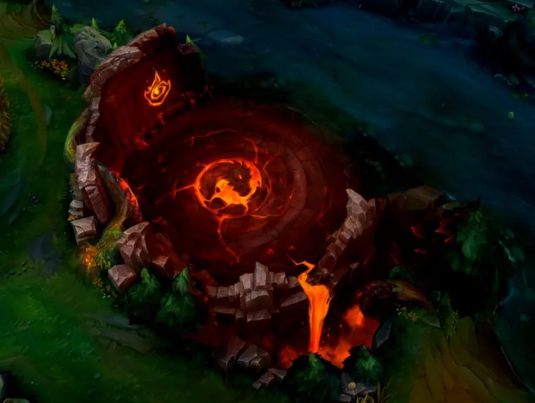
화염
둥지 주변 벽 소멸 · 폭발 식물
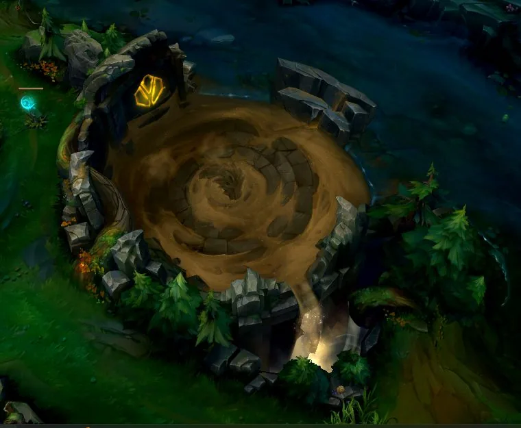
대지
바위 지형 생성
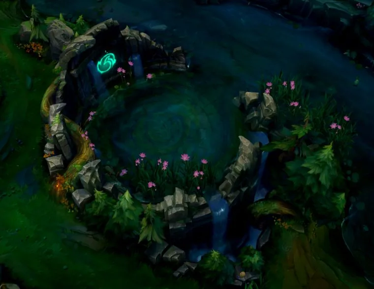
바다
부쉬 확장 · 물웅덩이
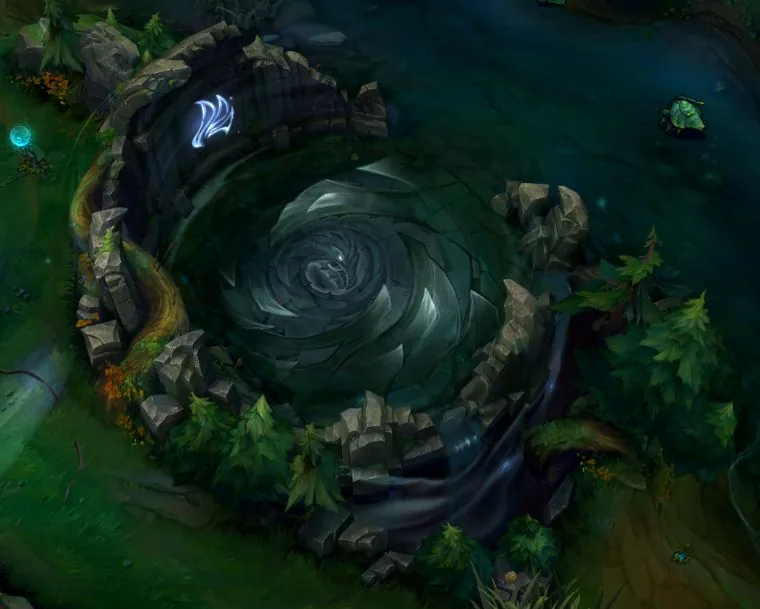
바람
이동 속도 기류 구역
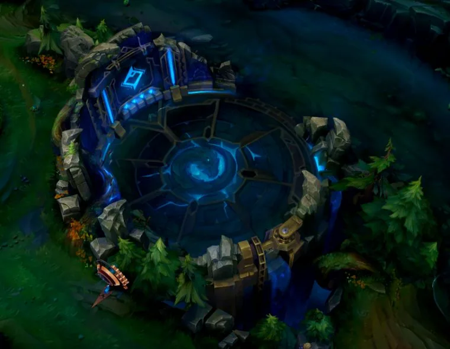
마법공학
순간 이동 관문 4쌍
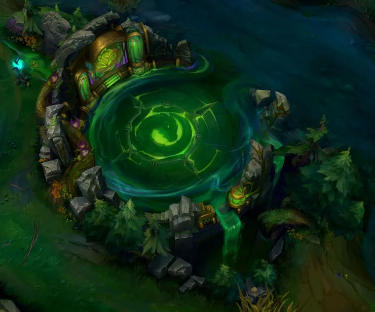
화학공학
정글 식물 추가
| 시점 | 결정 방식 |
|---|---|
| 5:00 | 첫 드래곤 — 원소 무작위 |
| 처치 후 | 다음 원소 무작위 (중복 없음) |
| 2회 처치 | 3번째 원소로 협곡 변형 · 이후 원소 고정 |
| 4회 처치 | 영혼 획득 → 장로 등장 |
설계 근거 (추정)
- 원소 6종이 공격 · 방어 · 회복 · 이동 · 순간 이동 · 지형의 서로 다른 플레이 축에 영향 — 협곡 지형에 따라 유리한 조합이 바뀝니다.
- 변형 시점을 2회 처치 이후로 설정 — 첫 두 드래곤 동안 다음 지형을 예고해 양 팀에 대비 시간을 줍니다.
효과 — 양 팀이 같은 조건에서 '이번 판의 협곡'에 맞춰 동선과 조합을 다시 판단해야 합니다.
문제 정의
|
A 공정성과 역할
|
B 정글
|
C 가변 요소
|
D 국면 전환
|
E 시야
2부 · C 가변 요소
20 / 27
협곡 변형 내용은 리그 오브 레전드 위키의 원소 협곡 문서 기준입니다.
자세히 보기
원소 6종의 의도는 공식 설명이 없어 추정했습니다.
D. 국면 전환 — 시간대별 핵심 지점 이동
오브젝트 쟁탈은 5분부터 끝까지 이어지고, 14분을 기점으로 라인전이 운영 단계로 전환됩니다.
문제
30분 넘는 경기 내내 목표가 같으면 전개가 단조롭고, 경기 단계 구분이 없습니다.
→
기획 의도
오브젝트 등장 시각과 웨이브 규칙 변화를 시간대별로 배치해 핵심 지점을 라인 → 강 → 사이드 → 둥지로 이동시킵니다.
라인전
오브젝트 쟁탈 — 경기 종료까지 지속
운영 · 공성
후반 결전
0분
5분
10분
15분
20분
25분
30분
35분
14:00 운영 전환
오브젝트 첫 등장
드래곤 5:00
유충 8:00
전령 15:00
바론 20:00
14분 전환 시점 설정 근거 (추정)
- 14:00에 웨이브 주기 30초 → 25초 · 대포 미니언 2웨이브마다 · 사이드 웨이브 속도 보정 종료 · 유충 소멸(14:45) 후 전령(15:00)이 겹칩니다.
- 14분은 라이너가 귀환 2 ~ 3회로 핵심 아이템을 갖추는 시점입니다. 라인을 비워도 손해가 적어 목표를 사이드 · 오브젝트로 옮긴 것으로 판단합니다.
문제 정의
|
A 공정성과 역할
|
B 정글
|
C 가변 요소
|
D 국면 전환
|
E 시야
2부 · D 국면 전환
21 / 27
구간은 일반적인 경기 흐름 기준입니다.
자세히 보기
구간끼리 겹쳐서 진행됩니다. 14:00 규칙 변화는 26.x 위키 기준이며, 14분을 택한 이유는 추정입니다.
E. 시야 — 정보의 자원화
안개로 양 팀의 보유 정보가 달라집니다. 정보 차이를 메우는 행동(와드 · 부쉬 · 미니맵)이 매판 다른 교전을 만듭니다.
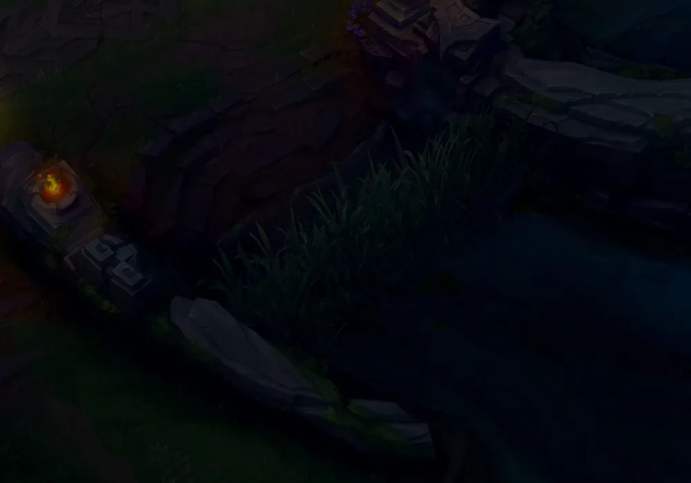
와드 없음 — 안개로 가려진 강
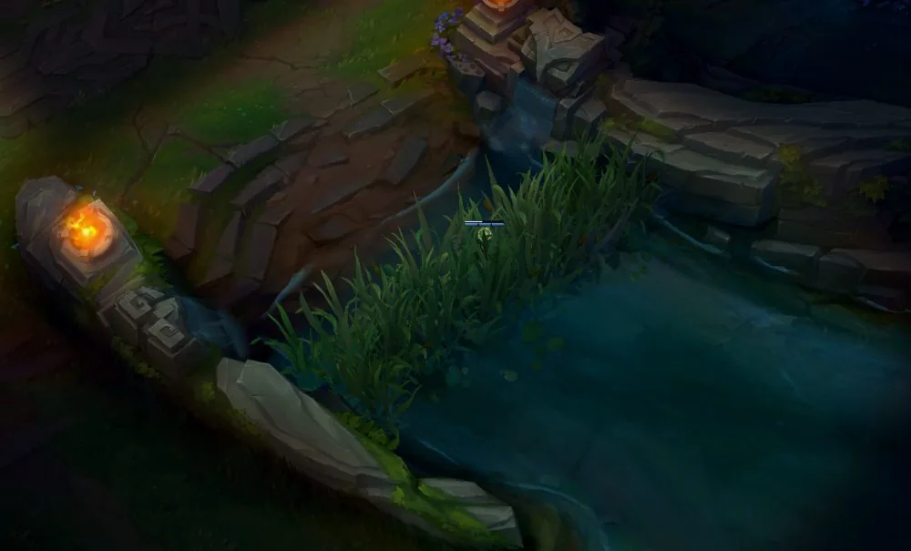
와드 설치 — 같은 지점의 안개 해제
문제
모든 위치가 공개되면 교전 결과가 능력치 비교로 정해지고 기습 · 심리전이 사라집니다.
→
기획 의도
안개로 정보를 가리고, 시야를 얻고 빼앗는 자원으로 설계합니다.
시야 설계의 경험 목표 (추정)
예측과 심리전
보이지 않는 상대의 위치를 추리하고 역이용합니다.
기습
안개 속 경로로 접근해 상대를 공격합니다.
정보 장악
와드 설치 · 제거로 시야 범위를 넓혀 가는 진행감을 줍니다.
역전 수단
불리한 팀도 시야 우위로 유리한 교전을 고를 수 있습니다.
E장 구성
와드 — 시야 자원 (23p) · 부쉬 — 지형 속 정보 차이 (24p) · 미니맵 — 정보 압축 전달 (25p) · 페어라이트 — 시야 거점 (26p)
문제 정의
|
A 공정성과 역할
|
B 정글
|
C 가변 요소
|
D 국면 전환
|
E 시야
2부 · E 시야
22 / 27
경험 목표 4종은 플레이 경험에 근거한 추정입니다.
E. 시야 원천과 와드
시야는 아군 유닛 · 구조물에서 발생합니다. 와드는 팀이 원하는 위치에 배치하는 시야 자원입니다.
| 시야 원천 | 범위 |
|---|---|
| 챔피언 · 미니언 | 이동하며 주변 시야 |
| 포탑 | 라인 고정 시야 |
| 와드 | 설치 지점 시야 — 정글 · 강 |
| 바위게 처치 | 처치 지점 일정 시간 시야 |
| 페어라이트 | 지정 위치 와드 시야 확대 (E5) |
시야 차단 요소
- 벽 — 너머 시야 차단
- 부쉬 — 외부에서 내부 확인 불가
- 안개 — 시야 밖 영역 전체
와드 · 장신구 종류
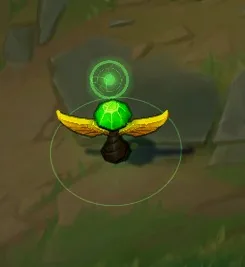
투명 와드
장신구 · 서포터 아이템
적에게 보이지 않고, 일정 시간 후 사라집니다.
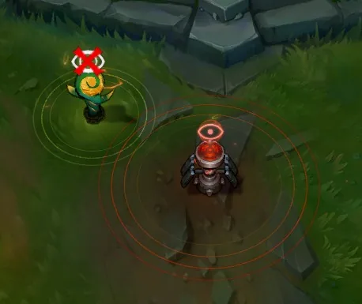
제어 와드
상점 구매 · 설치 1개 제한
적 투명 와드를 탐지 · 무력화하며, 적에게 보입니다.
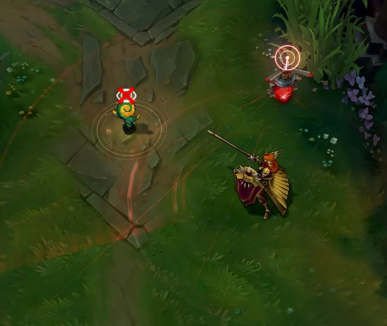
예언자의 렌즈
장신구
주변 투명 와드를 탐지해 제거할 수 있습니다.
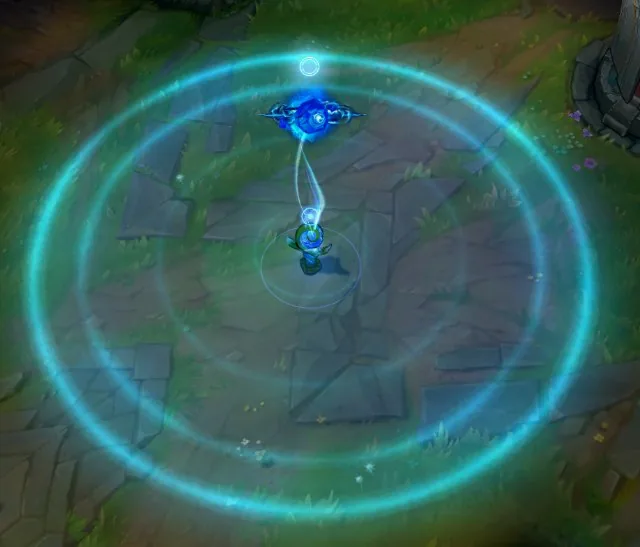
망원형 개조
장신구
먼 지점에 체력 1인 와드를 설치하며, 적에게 보입니다.
시야 싸움 = 와드 설치(정보 확보)와 제거(정보 차단)의 반복 — 설치 위치가 판마다 달라 정보 상황도 매판 달라집니다.
문제 정의
|
A 공정성과 역할
|
B 정글
|
C 가변 요소
|
D 국면 전환
|
E 시야
2부 · E 시야
23 / 27
이미지 출처는 리그 오브 레전드 위키입니다.
자세히 보기
와드 지속 시간 · 충전 수치는 패치마다 조정되므로 슬라이드에서 생략했습니다.
E. 부쉬 — 내부와 외부의 정보 차이
부쉬 내부는 외부에서 보이지 않습니다. 같은 거리에서도 부쉬 안쪽이 정보 우위를 가집니다.
A. 부쉬 밖에서 볼 때 — 내부 확인 불가
아군
?
적 위치 미확인
B. 부쉬 안에서 볼 때 — 외부 확인 가능
아군
적
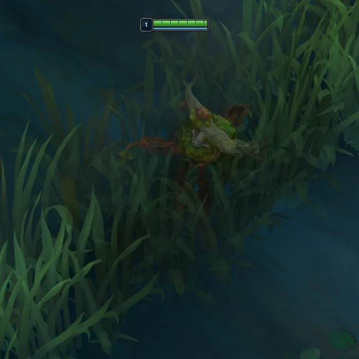
부쉬 안 챔피언 — 본인 · 아군 화면에는 반투명 표시
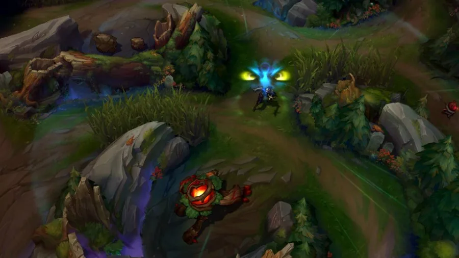
정글 통로 부쉬 — 매복 · 갱킹 출발 지점
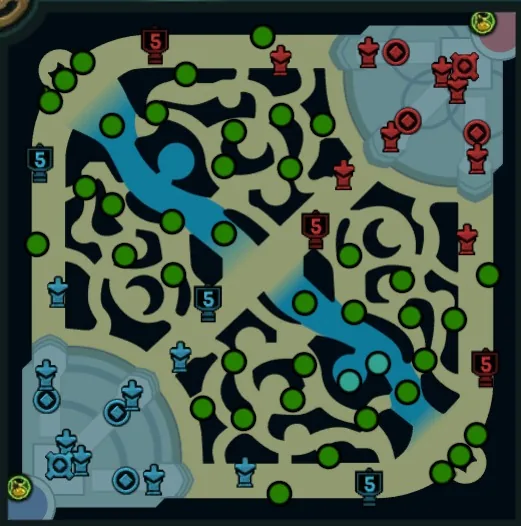
부쉬 분포(초록 점) — 라인 양옆 · 강 · 정글 통로
- 매복 — 갱킹 · 기습 출발점
- 회피 — 추격 시야 차단
- 시야 장악 — 와드 우선 설치 지점
문제 정의
|
A 공정성과 역할
|
B 정글
|
C 가변 요소
|
D 국면 전환
|
E 시야
2부 · E 시야
24 / 27
부쉬 안에 와드가 있거나 같은 부쉬에 아군이 있으면 내부를 확인할 수 있습니다.
자세히 보기
부쉬 안에서 공격하면 일시적으로 노출됩니다. 도식은 원리 설명용입니다. 실제 인게임 비교 캡처로 교체할 예정입니다.
E. 미니맵 — 시야 정보의 압축 전달
화면은 맵의 일부만 표시합니다. 미니맵이 팀 전체 시야 정보를 한 영역에 압축해 전달합니다.
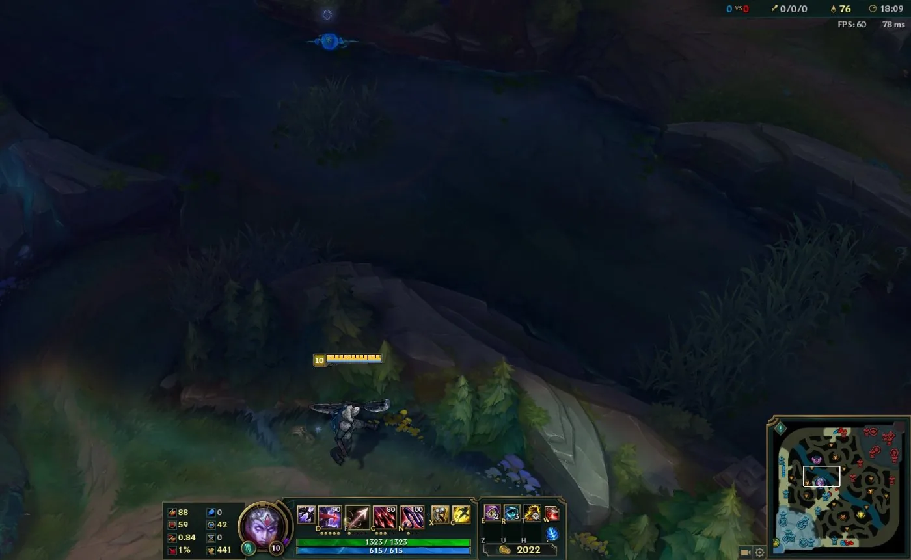
미니맵
화면 = 맵의 일부
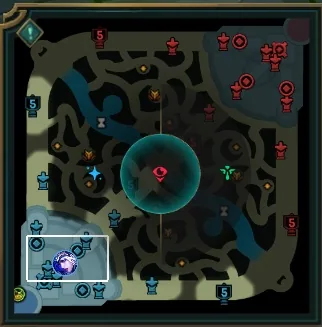
핑
미니맵 지점을 눌러 위험 · 이동 · 지원 신호를 팀에 공유
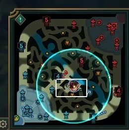
1
2
3
4
5
1
현재 화면 범위
흰 사각형
2
챔피언 위치
아군 전원 · 시야 안의 적
3
구조물 상태
숫자 = 남은 포탑 방패
4
정글 캠프
생존 · 재생성 여부
5
미니언 웨이브
라인 진행 위치
미니맵에서 사라진 적 = 위치 불명
미니맵에 보이지 않는 적은 매복 · 갱킹 위협 판단의 근거입니다. 정보 부재도 정보로 활용됩니다.
문제 정의
|
A 공정성과 역할
|
B 정글
|
C 가변 요소
|
D 국면 전환
|
E 시야
2부 · E 시야
25 / 27
와드 · 아군이 만든 시야는 모두 미니맵에 합산되어 표시됩니다.
자세히 보기
미니맵 이미지는 위키 UI 예시입니다(구버전 UI 포함). 현행 인게임 캡처로 교체할 예정입니다.
E. 페어라이트 — 지정 위치 시야 장치
2026 시즌 신규 시야 장치입니다. 지정 위치에 와드를 설치하면 시야 범위가 넓어지고 추가 시야를 제공합니다.
● 시작 시 8곳
○ 협곡 변형 후 +4곳
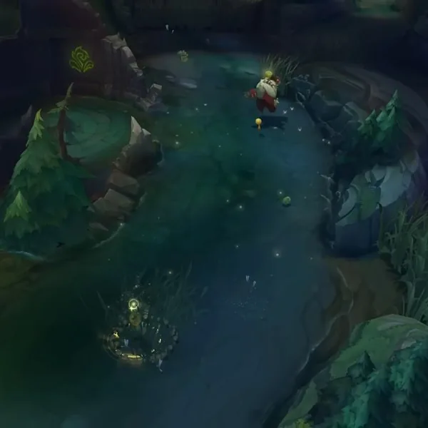
효과
- 와드 시야 반경 +25%
- 지정 구역 45초 추가 시야 (부쉬 내부 포함)
- 적은 탐지 효과로만 인지
| 위치 | 역할 |
|---|---|
| 기지 입구 (4) | 자기 진영 정글 감시 |
| 강 섬 부쉬 (2) | 탑 · 바텀 강 감시 |
| 강 벽 부쉬 (2) | 미드 쪽 강 감시 |
| 사이드 정글 (4) | 협곡 변형 후 — 스플릿 · 측면 이동 추적 |
설계 의도
지정 위치로 와드 설치를 유도 — 와드 설치 · 제거를 둘러싼 소규모 교전 지점 형성
문제 정의
|
A 공정성과 역할
|
B 정글
|
C 가변 요소
|
D 국면 전환
|
E 시야
2부 · E 시야
26 / 27
26.1에 도입되었고, 26.3에서 바론 쪽 강 페어라이트 추가 시야 범위를 바위게 지점·둥지 입구 앞까지로 축소했습니다.
자세히 보기
미니맵 위치는 구역 기준 개략 표시입니다. 위치 고정에 따른 개선안은 2편에서 다룹니다.
결론 — 구조와 추구한 경험
2부 구조별로 추구한 플레이 경험을 대응해 정리합니다.
A
지형을 점대칭으로 고정함으로써
→
양 팀이 실력만으로 겨루는 공정한 경쟁 추구
A
라인 목적 · 오브젝트 성격을 다르게 둠으로써
→
5명이 서로 다른 목표를 추구하는 역할 분담 추구
A
구조물을 순서대로만 무너뜨리게 함으로써
→
단계적 진행과 역전 시간 추구
B
캠프 수입을 라인과 맞추고 동선을 분기시킴으로써
→
매판 다른 초반 3분 추구
C
원소에 따라 협곡을 변형함으로써
→
판마다 다른 중후반 지형 추구
D
오브젝트 시각으로 핵심 지점을 옮김으로써
→
시간대마다 다른 목표 추구
E
안개로 정보를 가리고 시야를 자원화함으로써
→
예측 · 기습 · 심리전 추구
문제의식에 대한 결론 — 고정된 맵에서 매판 다른 경기가 나오는 원인
지형은 고정하고 그 위의 목표 · 경로 · 시간 · 정보를 변수로 설계합니다. 공정성은 지형에서, 다양성은 지형 위 변수에서 확보합니다.
2편 — 전투 · 밸런스 · 개선안
포탑 골드 구조와 초반 격차 고착, 역할 퀘스트 · 역전 장치 분석, 개선 제안
결론
27 / 27
왼쪽은 구조(~함으로써), 오른쪽은 추구한 플레이 경험입니다.
자세히 보기
장 기호는 2부 A~E와 대응합니다.